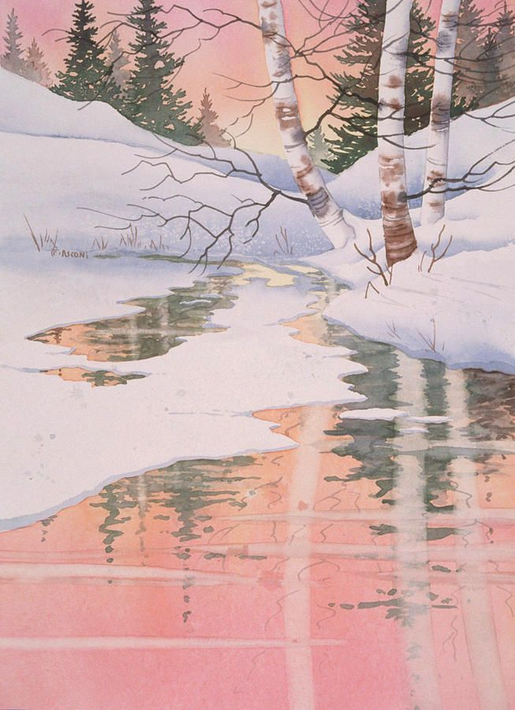

我的设计 |
|||
| echo | my description | my instruct | my sport |
I want to become a designer For a girl who is interested in fashion, what would be the dream job? Being a model? Probably not―that’s for the one who has short sight, the clever girl will want to be a fashion stylist, they can have access to celebrities and dress people up in the style they like. |
 | Many years ago, US TV series Gossip Girl was popular around the world, besides the beautiful faces of the young girls and handsome boys, the most attractive factor is the clothes fashion. The girls in the drama wear all the newest fashionable clothes, presenting their most perfect state in front of the audience. The audience is conquered by the fashion, they admire their stylists. To be a fashion stylist, one can master the tendency and create his own time. When we see the models, they are so stunning, they wear the most beautiful dress, let every girl be jealous, but it is the stylist that creates the fashion, they can try every way with their distinct taste to make the models look pretty and attractive. Fashion stylist’s ability is powerful. |
|